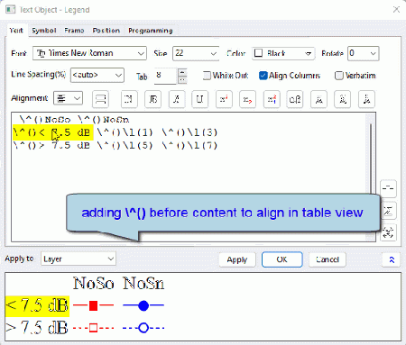

Letztes Update: 02.06.2023
Um Legendentext rechts auszurichten:
Standardmäßig wird der Legendentext links ausgerichtet. Um den Legendentext rechts auszurichten:
Anwender, die mehr Kontrolle über die Legendenausrichtung haben möchten, lesen Sie bitte Ausrichtung der Legendenelemente. |
Um die Legende horizontal auszurichten:
Um die Legende in einer Tabellenansicht auszurichten:

Wir können einen Zellenanker \^() hinzufügen, um das Objekt rechts vom Anker in einer Zelle zu positionieren. Weitere Einzelheiten finden Sie in der FAQ-1168 Wie richte ich Symbole in Legenden aus?

Schlüsselwörter:Legende, Ausrichtung, rechts ausgerichtet, horizontal, Legendentext